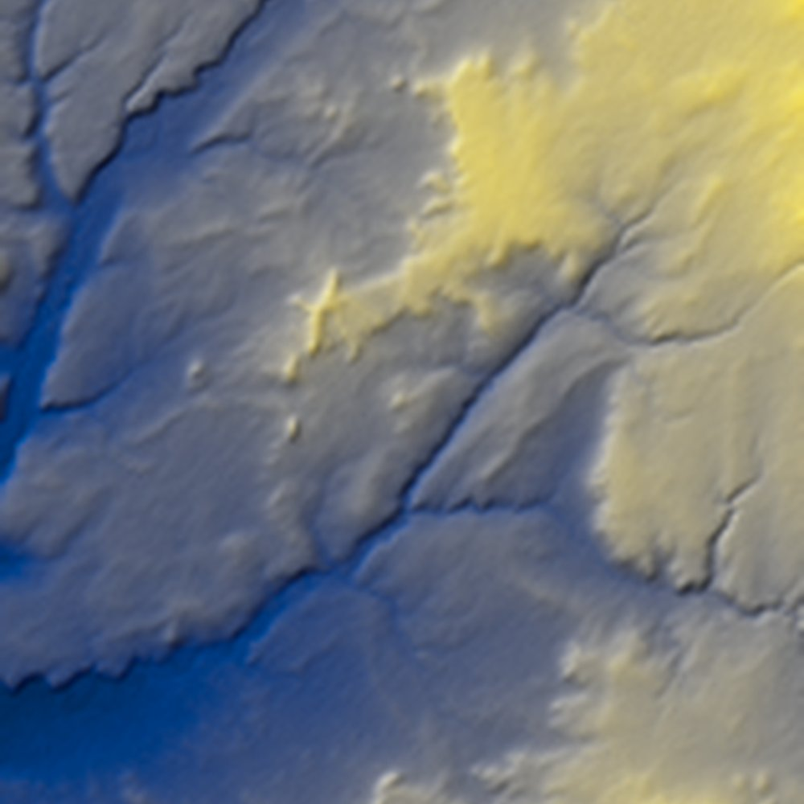
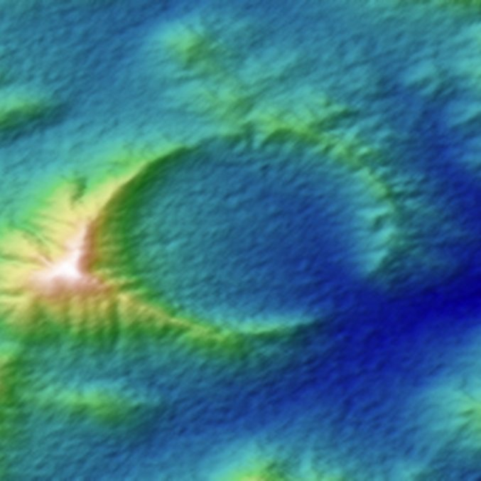
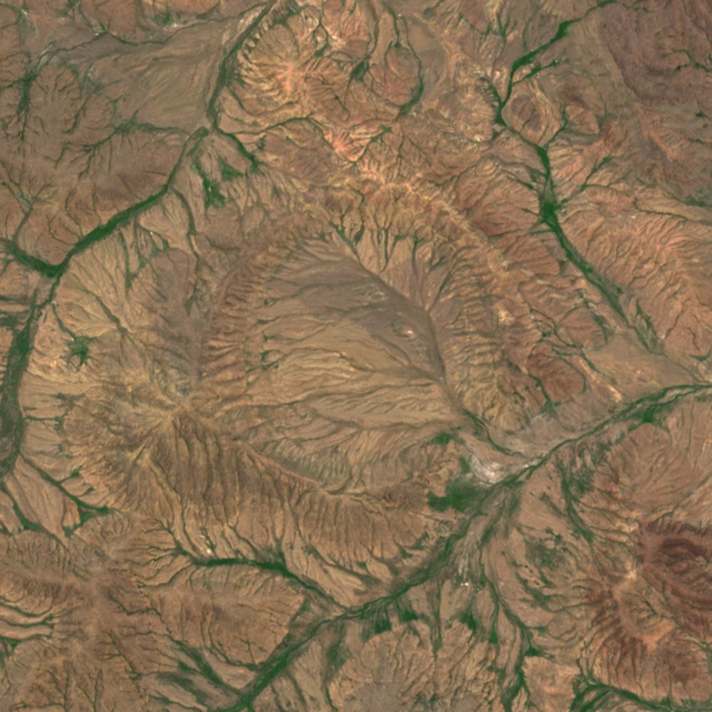
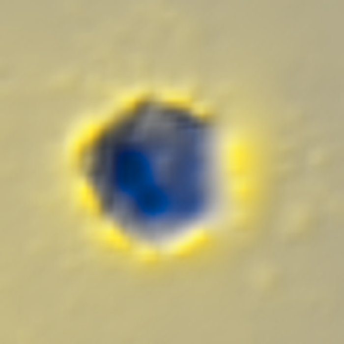
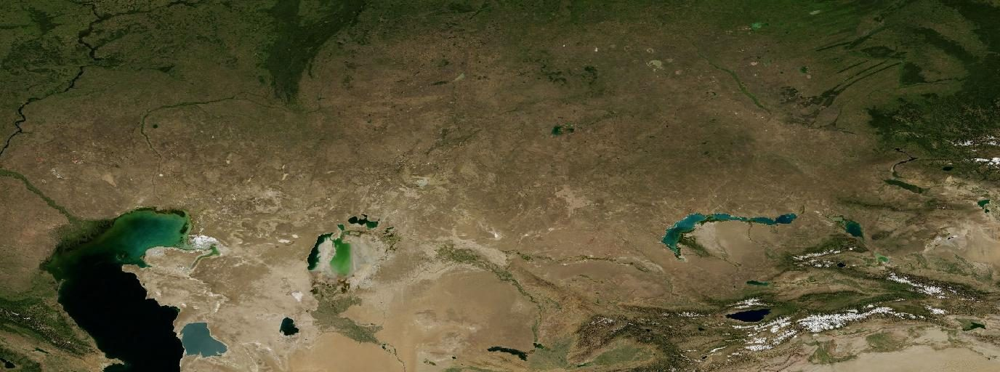

We live in Astana. A few hundred kilometres from us, in the steppe near Zhezkazgan, Soyuz capsules have been landing since the 1960s. For this hackathon we asked a simple question: is that steppe any good for practising Moon and Mars missions?
Most analog sites people use are in the US, Iceland, Hawaii or Chile. Kazakhstan is rarely on the list. We wanted to check it with data instead of opinions.

We used free satellite data from NASA, plus some from ESA, JAXA and the Canadian Space Agency. We picked 16 places in Kazakhstan and wrote code to measure them.
To avoid fooling ourselves, the same code also measured:
real landing sites on Mars and the Moon,
10 well-known analog sites, like Meteor Crater in Arizona,
and 200 random points in deserts around the world.
If Kazakhstan was no better than a random desert, we would see it.
We started with the Soyuz landings, because that is where real spacecraft come down. We found coordinates for 95 landings and measured how steep the ground is around each one[1].
The landing points have a typical slope of 0.12°. Random spots in the same steppe have 0.29°. Mars landing sites have 0.84°. The difference is not luck[2].
The elevation maps we used have 30 m pixels, so we checked again with a laser. NASA's ICESat-2 satellite measures the ground every 20 m. The result was the same: the landing zone is about twice as flat as the steppe around it.
This matters because rovers and landers need a lot of flat ground to practise on, and this zone has thousands of square kilometres of it. People who know how to recover spacecraft already work there.
Next we looked at temperature. Mars swings by about 100 K between day and night. Nowhere on Earth does that, but Kazakhstan's steppe swings a lot between seasons.
From January nights to July afternoons, the ground changes by 72 K. Random deserts change by 54 K. Well-known analog sites change by 63 K.
We also measured how much sunlight the ground reflects[3]. Mars landing sites reflect 13–24%. Most of our Kazakh sites reflect about 19%, inside that range. Many famous analog sites are brighter.
Kazakhstan has four known impact craters. The best kept one is Shunak: 2.8 km wide and 70 m deep.


Gravity on Mars is weaker, so the same impact there would make a bigger crater, about 7 km. We compared Shunak with Zunil, a young Mars crater of similar class[4].


On Mars, salt deposits show where water used to be. We used the ESA Sentinel-2 satellite to look for salty ground. Two places scored higher than every random desert: the shore of Lake Inder and the dry bottom of the Aral Sea.
We also looked at the Moon's south pole with NASA's LRO data. In about a third of the area, ice can only survive under a thin layer of dry soil, around 8 cm. In the Tien Shan mountains ice also survives under a layer of rock. The temperatures are very different, but the idea is the same.
Click a blue dot or a name to see the numbers. White dots are Soyuz landings.

Which site is best depends on what you care about most. So we let the computer pick random priorities 1,000 times and counted how often each site made the top three.
| What we measured | Result | Numbers |
|---|---|---|
| Flat ground (30 m maps) | strong | 0.12° vs 0.29° in the steppe |
| Flat ground (laser) | strong | 0.16° vs 0.34° |
| Temperature range | strong | 72 K vs 54 K |
| Reflectivity | like Mars | 19%, Mars sites 13–24% |
| Salty ground | 2 sites | Inder, Aral Sea |
| Craters | old | Shunak keeps a quarter of its depth |
| Small-scale texture | next | needs sharper data |
Satellites can't see rocks smaller than 40 m or tell how hard the soil is. A short trip with a drone and a soil probe would.
Cracked, polygon-shaped ground is common on Mars. Our method finds it in China's Qaidam desert, but Kazakh cracks are smaller than a Sentinel-2 pixel (10 m).
The Sentinel-1 radar did not separate Kazakhstan from other deserts. NASA's new NISAR radar sees deeper and is closer to the radars used on Mars and the Moon.
Comparing the overall shape of the land alone did not work well for any analog site, not just ours. The next step is to compare several measurements at once.
Soyuz crews have been landing on Mars practice ground for 60 years. Now we have the numbers.